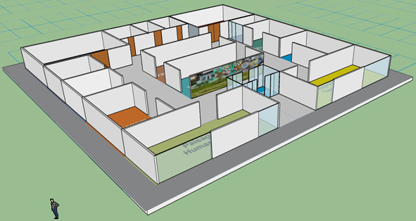
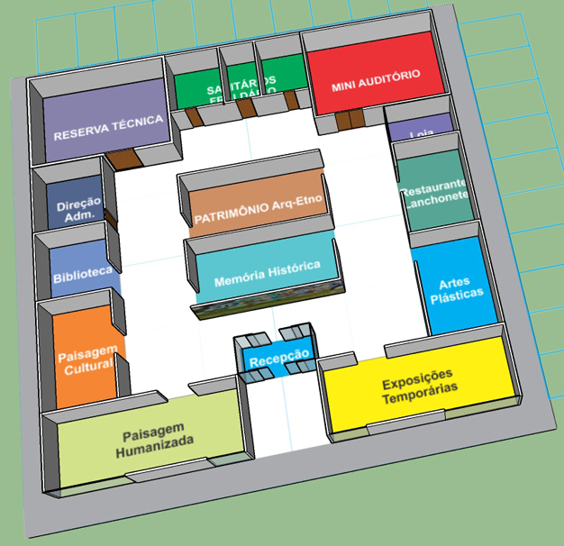
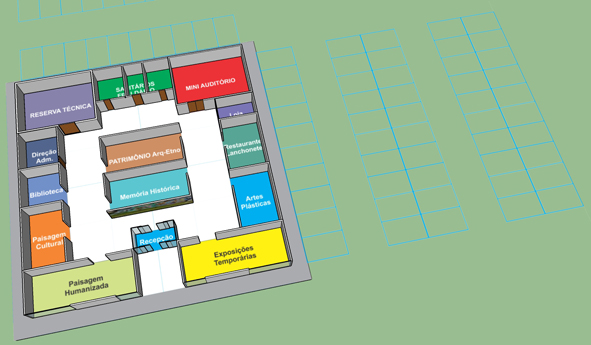

Estrutura do Museu de História e Artes de Morretes para as Visitas Guiadas.
   |
| Espaços expositivos | |
| 1. do patrimônio arqueológico-etnográfico | 10,0 x 5,0m |
| 2. da memória histórica | 10,0 x 5,0m |
| 3. da paisagem humanizada | 12,5 x 5,0m |
| 4. da paisagem cultural | 5,0 x 7,5m |
| 5. de artes plásticas | 5,0 x 7,5m |
| 6. de exposições temporárias | 12,5 x 5,0m |
| Atividades educacionais |
| 1. arqueologia e etnologia |
| 2. memória da comunidade |
| 3. paisagem humanizada |
| 4. paisagem cultural |
| Espaços operacionais ou de serviços | |
| 1. mini auditório | 10,0 x 7,5m |
| 2. recepção | 5,9 x 7,5m |
| 3. reserva técnica | 10,0 x 7,5m |
| 4. sanitários e fraldário | 10,0 x 5,0m |
| 5. biblioteca | 5,0 x 5,0m |
| 6. loja | 5,0 x 3,0m |
| 7. restaurante e/ou lanchonete | 6,0 x 7,0m |
| 8. direção e administração | 5,0 x 5,0m |
| 9. estacionamento | para 50 carros |
| 10. circulação | - |
| 11. central telefônica / internet / hi-fi | - |
| 12. controle de segurança | - |
| 13. sonorização | - |
(As medidas são sugestões mínimas para a formação de um museu físico.)
| Referências: BLEY, Lineu. Um Museu para Morretes. Monografia apresentada, para obtenção de especialista, no Curso de Pós-Graduação "lato senso" em Museologia, da Escola de Música e Belas Artes do Paraná - EMBAP. Abril, 2007. |